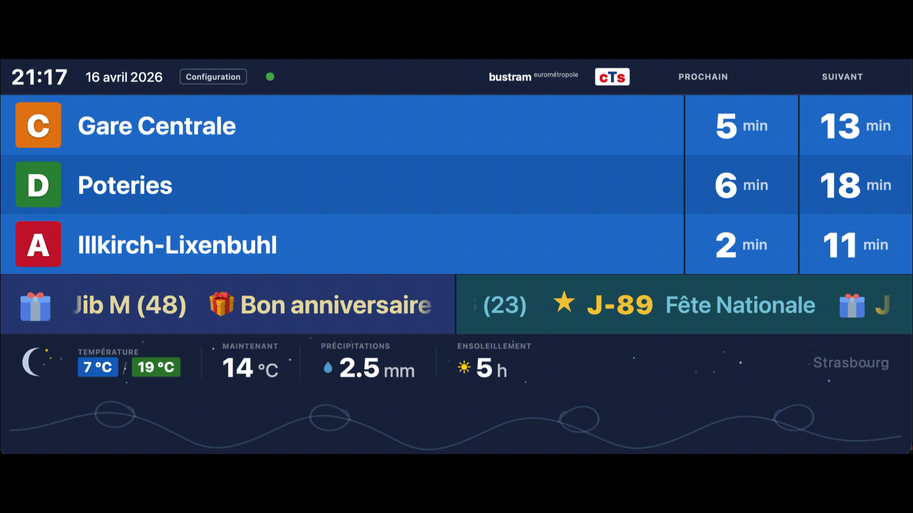
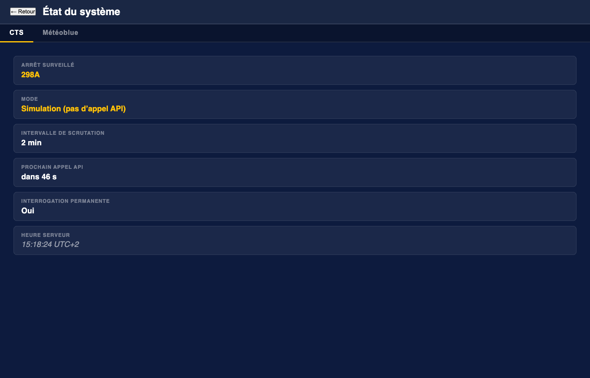
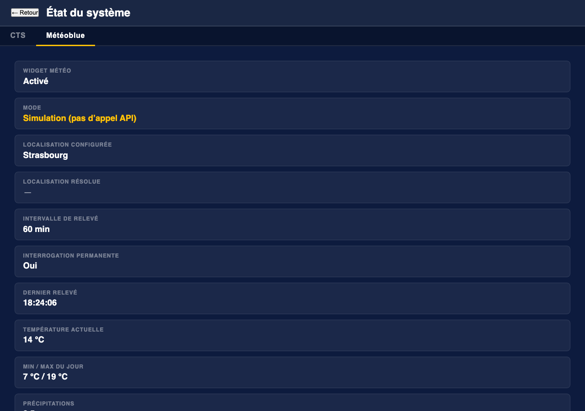
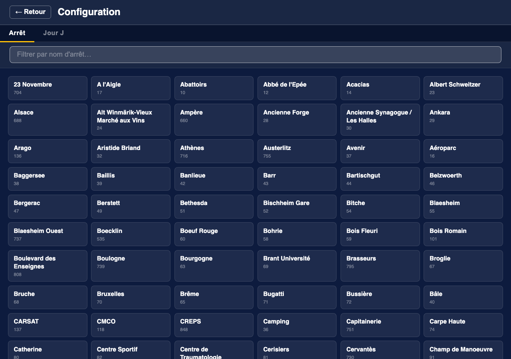
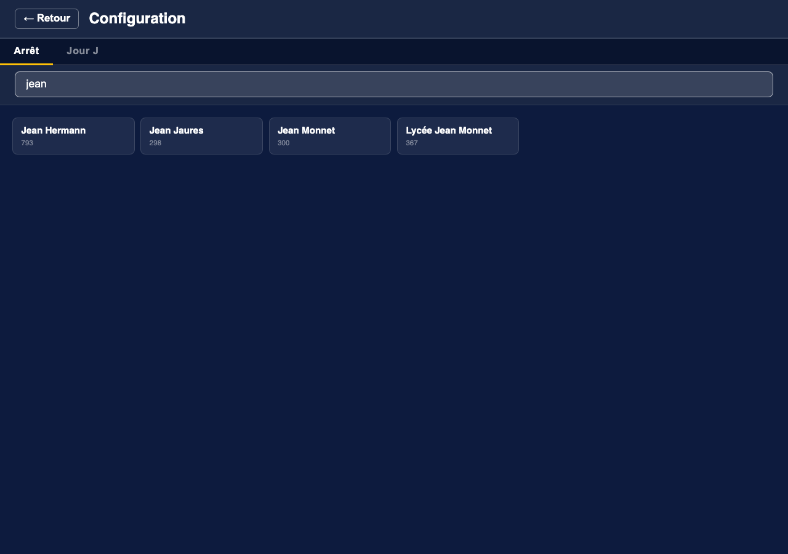
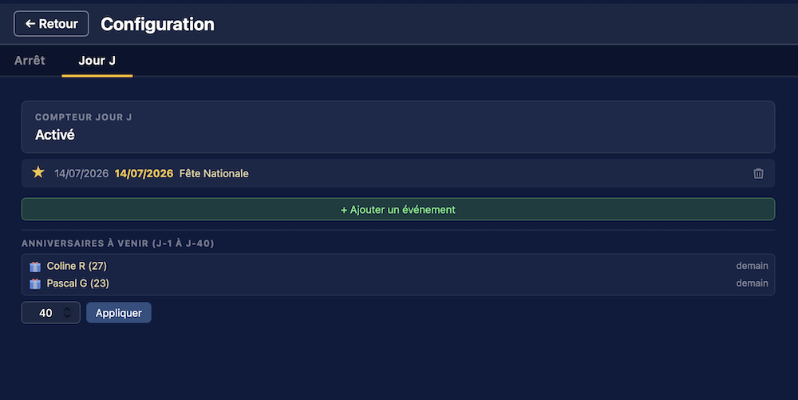
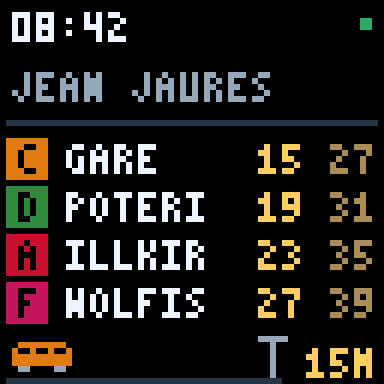

Suivez les départs du réseau CTS directement dans votre navigateur ou sur un écran LED Divoom Pixoo64. Mise à jour automatique via WebSocket — aucun rechargement de page.
Un tableau de bord complet pour suivre les horaires de tramway en temps réel.

L'application interroge l'API SIRI 2.0 de la CTS et diffuse les données en direct vers tous les navigateurs connectés via WebSocket. Un seul binaire auto-contenu sert à la fois l'interface web et l'API REST.
Les horaires en gras sont confirmés par GPS. Les horaires en italique sont théoriques (grille horaire).
Surveillez plusieurs codes d'arrêt simultanément. Le tableau défile automatiquement entre les arrêts.
Disposition compacte sur mobile (≤ 480 px). Glissement gauche/droite pour changer d'arrêt manuellement.
Bandeau météo en bas du tableau : température min/max, précipitations, indice UV. Fond animé (pluie, neige, soleil…).
Affiche les anniversaires depuis un fichier JSON de contacts, avec calcul automatique de l'âge.
Défilement des prochains événements avec icône, label et décompte en jours. Animation confettis le jour J.
Affichage Ambient Hub sur une matrice LED 64×64 Divoom Pixoo64, avec horloge et bandes colorées par ligne.
L'interface web est intégrée à la compilation. Déployez avec un simple scp, aucune dépendance externe.
Compilez depuis les sources ou déployez le binaire pré-compilé.
async fn dans les traits via AFIT)# Build de développement
cargo build
# Build de production optimisé (LTO activé)
cargo build --release
# ou via le script fourni :
./build_release.sh
Bien que Mac et Freebox soient tous deux ARM64, le Mac produit un binaire Mach-O (macOS) tandis que
la Freebox attend un ELF Linux. La solution est
cargo-zigbuild :
Zig embarque un cross-compilateur — aucun Docker requis.
cargo install cargo-zigbuild
rustup target add aarch64-unknown-linux-musl./build_freebox.shProduit un ELF statique (~3,4 Mo) dans dist-freebox/ et le copie automatiquement sur les instances via scp.
# Avec la configuration par défaut
cargo run --release
# Avec un fichier de configuration personnalisé
cargo run --release -- /chemin/vers/config.tomlPuis ouvrir http://localhost:3000 dans votre navigateur.
Pourquoi musl et non gnu ?
musl produit un binaire entièrement statique, sans dépendance à la version glibc de la Freebox.
Déploiement simplifié, zéro surprise « mauvaise glibc ».
CTS et météo peuvent être simulés indépendamment. Utilisez demo.toml pour un démo entièrement autonome :
cargo run -- demo.tomlLa démo active des départs CTS simulés, une météo simulée, les anniversaires et le compteur Jour J. Les horaires sont légèrement jittérisés à chaque cycle pour donner une impression de vivant.
Copiez et éditez config.toml. Toutes les clés CTS sont préfixées cts_, météo meteoblue_, écran LED pixoo64_.
# ── API CTS ───────────────────────────────────────────────────────────────────
# Votre jeton API CTS Open Data
cts_api_token = "xxxxxxxx-xxxx-xxxx-xxxx-xxxxxxxxxxxx"
# Codes d'arrêt à surveiller — tableau TOML inline.
# Ajoutez plusieurs entrées pour tourner automatiquement entre les arrêts.
# Exemples : "233A" = Homme de Fer, "298B" = Jean Jaurès (dir. Gare Centrale)
cts_monitoring_ref = ["298B"]
# Durée d'affichage de chaque arrêt en secondes (multi-arrêt uniquement)
cts_stop_rotation_in_second = 15
# Fréquence d'interrogation de l'API en minutes
cts_polling_interval_minutes = 2
# Nombre maximum de prochains départs demandés par appel API
cts_max_stop_visits = 10
# Adresse du serveur web (0.0.0.0 pour écouter sur toutes les interfaces)
listen_addr = "0.0.0.0:3000"
# Simulation CTS (données fictives, aucune clé nécessaire)
cts_simulation = falseRestreignez les appels API aux plages horaires de service grâce à des expressions crontab à 5 champs. Les points-virgules séparent plusieurs clauses ; l'interrogation a lieu dès qu'une clause correspond.
# Interrogation uniquement pendant les heures de service :
# Semaine 6h–23h, week-end 8h–23h :
cts_always_query = false
cts_query_intervals = "* 6-23 * * 1-5; * 8-23 * * 0,6"
# Matin + après-midi + soir :
# cts_query_intervals = "* 6-9,14-18,22-23 * * *"meteoblue_enabled = true
meteoblue_api_key = "VOTRE_CLÉ_METEOBLUE"
meteoblue_location = "Strasbourg"
meteoblue_polling_interval_minutes = 60
meteoblue_simulation = falsepixoo64_enabled = true
pixoo64_address = "192.168.1.42"
pixoo64_simulation = false # true = preview PNG uniquement
pixoo64_brightness = 80 # luminosité 0–100
pixoo64_tram_screen_seconds = 6 # durée de chaque écran départs (1–60)
pixoo64_moment_screen_seconds= 1 # durée de chaque écran anniversaire/Jour J (1–30)
pixoo64_lines_per_screen = 4 # lignes de départ par écran (1–4)birthday_enabled = true
birthday_file = "data/birthdays.json"Format du fichier JSON :
{
"birthdays": [
{ "name": "Jean Martin", "date": "12/04" },
{ "name": "Claire Dupont", "date": "03/07/1985" }
]
}Format de date : JJ/MM (annuel, sans année) ou JJ/MM/AAAA (âge calculé et affiché automatiquement).
jour_j_enabled = true
birthday_days_ahead = 7
jour_j_events = [
{ date = "14/07/2026", label = "Fête Nationale", icon = "star" },
{ date = "25/12/2026", label = "Noël", icon = "present" },
{ date = "31/12/2026", label = "Réveillon", icon = "party" },
]Icônes disponibles :
star
🎉 party
❤️ heart
🎁 present
💀 skull
Pour des raisons de sécurité, stockez vos clés API dans des fichiers séparés :
cts_api_token_file = "/etc/cts/token"
meteoblue_api_key_file = "/etc/cts/meteoblue_key"
Tour d'horizon des principales fonctions de l'application.
Cliquez sur le point de statut (●) dans l'en-tête pour ouvrir l'overlay de statut. Il présente deux onglets :

Onglet statut CTS
Onglet statut MétéoblueCliquez sur le bouton Configuration dans l'en-tête pour accéder aux réglages sans redémarrer le serveur.

Sélection d'arrêt
Recherche d'arrêt
Gestion des événements Jour JSélecteur d'arrêt — parcourez tous les arrêts CTS et changez l'arrêt surveillé à la volée.
La modification est sauvegardée dans config.toml et un nouveau poll est déclenché immédiatement.
La liste des arrêts est récupérée depuis l'API CTS réelle, même en mode simulation.
Quand meteoblue_enabled = true, le bas du tableau affiche une bande météo en direct :
☁ 7°C / 19°C 💧 2.5 mm UV 3meteoblue_location) est résolu en coordonnées via l'API Meteoblue au démarrage.
Quand birthday_enabled = true et que moins de 4 lignes de départ sont affichées,
les anniversaires du jour s'affichent en défilement horizontal. L'âge est calculé automatiquement
si l'année de naissance est renseignée.
Quand jour_j_enabled = true, une banderole défilante liste tous les événements à venir
avec leur icône, leur libellé et le nombre de jours restants.
birthday_days_ahead jours) sont automatiquement fusionnés dans le défilement Jour J.
La zone vide sous la bande météo contient une animation ornementale lente : cinq designs d'arabesque SVG
se dessinent progressivement (animation stroke-dashoffset), se maintiennent brièvement,
puis s'effacent avant que le design suivant commence. Purement décoratif.
Affichage Ambient Hub sur une matrice LED 64×64 Divoom Pixoo64.

Chaque écran partage un bandeau d'en-tête permanent (y = 0–28) :
HH:MM (échelle 2, blanc)Le corps (y = 29–63) alterne entre :
| Mode | Lignes | Hauteur par ligne | Nom d'arrêt |
|---|---|---|---|
| 4 lignes | 4 | 8 px | Non |
| 3 lignes | 3 | 8 px | Oui |
| 2 lignes | 2 | 13 px | Oui |
| 1 ligne | 1 | 18 px | Oui |
Chaque bande de ligne affiche : lettre de ligne (couleur marque) | destination (4 car., blanc) | prochain départ right-aligné (jaune, ou orange vif si < 2 min) | deuxième départ (ambre).
| Clé | Défaut | Plage | Rechargement à chaud |
|---|---|---|---|
pixoo64_enabled | false | — | Non |
pixoo64_address | — | — | Non |
pixoo64_simulation | false | — | Non |
pixoo64_brightness | — | 0–100 | Non (démarrage uniquement) |
pixoo64_tram_screen_seconds | 6 | 1–60 | Oui |
pixoo64_moment_screen_seconds | 1 | 1–30 | Oui |
pixoo64_lines_per_screen | 4 | 1–4 | Oui |
Mode simulation — activez pixoo64_simulation = true pour prévisualiser les frames en PNG
via /api/pixoo64/preview sans envoyer quoi que ce soit à l'appareil.
Ouvrez également mockup_pixoo64.html pour un aperçu interactif 512×512 avec contrôles de rotation live.
Tous les endpoints /api/* sont bloqués par nginx pour les clients externes (non-LAN) — ils renvoient 403 avant d'atteindre le serveur Rust.
| Endpoint | Description |
|---|---|
GET /ws |
Flux WebSocket — pousse le JSON DepartureBoard à chaque mise à jour |
GET /api/stops |
Liste tous les arrêts logiques (triés par nom) |
GET /api/stops/:code/details |
Arrêts physiques et lignes/directions sous un code logique |
POST /api/config |
{"monitoring_refs":["298B"]} — change les arrêts surveillés à chaud |
POST /api/jour-j |
Met à jour les événements Jour J et l'horizon d'anniversaires |
GET /api/status |
État du polling, statut météo, événements Jour J et config anniversaires |
GET /api/pixoo64/preview |
Dernière frame Pixoo64 en PNG (mode simulation uniquement) |
Les clés Pixoo64 qui supportent le rechargement à chaud peuvent être mises à jour sans redémarrage :
curl -X POST http://localhost:3000/api/config \
-H "Content-Type: application/json" \
-d '{"pixoo64_lines_per_screen": 2}'La modification prend effet dès la prochaine frame rendue.
L'application est conçue pour être exposée sur internet via un reverse proxy nginx.
nginx utilise un bloc geo pour classifier les requêtes en internes (LAN) ou externes.
La variable $cts_is_external pilote toutes les décisions d'accès :
| Surface | Interne (LAN) | Externe (internet) |
|---|---|---|
| Tableau de bord (WebSocket) | Tableau complet avec anniversaires et Jour J | Tableau livré, mais birthdays_today et jour_j_events sont supprimés côté serveur |
/api/stops, /api/config, /api/jour-j, /api/status |
Autorisé | Bloqué par nginx (403) — n'atteint jamais Rust |
| Boutons Config et Statut | Visibles | Masqués (UI uniquement — le blocage API est la vraie barrière) |
| Lignes Anniversaires / Jour J | Visibles | Masquées (JS) — données absentes du payload de toute façon |
Pourquoi supprimer côté serveur et pas seulement cacher en JS ?
Le JavaScript exécuté dans le navigateur peut être modifié par n'importe qui.
Masquer un élément UI n'empêche pas un attaquant de lire les frames WebSocket directement dans les DevTools.
Le serveur maintient deux canaux de diffusion — un complet (interne), un filtré (externe) —
et route chaque client WebSocket vers le canal approprié selon l'en-tête X-CTS-External positionné par nginx.
GET /api/stops et les endpoints de découverte d'arrêts sont limités à 10 requêtes/minute par IP
(zone cts_stops dans nginx-conf.d-cts.conf).
Le fichier dist/nginx-default couvre trois instances simultanées :
| Instance | Préfixe de chemin | Port |
|---|---|---|
| Jaurès | /cts/jaures/ | 3000 |
| Gallia | /cts/gallia/ | 3001 |
| Porte Hop | /cts/portehop/ | 3002 |
Chaque instance possède ses propres blocs location WebSocket, API et assets statiques.
Une page d'erreur partagée (dist/cts-offline.html) est servie lorsqu'un backend est indisponible.
dist/nginx-conf.d-cts.conf → déployer dans /etc/nginx/conf.d/cts.confdist/nginx-default → déployer dans /etc/nginx/sites-enabled/defaultdist/cts-offline.html → déployer dans /var/www/html/